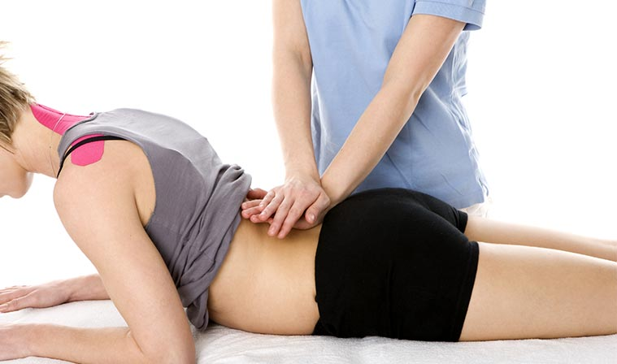

Le cabinet de Kinésithérapeute libéral du Dr Houloulou est ouvert depuis août 2016. Il est situé près de la gare de Roubaix dans le Nord.
Kiné depuis dix ans, Mr Houloulou est diplômée depuis 2007 à l'I.F.M.K.N.F. (Institut de Formation en Masso-Kinésithérapie du nord de la France). A Lille, il a suivi une formation en uro-gynécologie, en rééducation de l'épaule avec la méthode CGE (Concept Global d'Épaule), en biokinergie, en rééducation respiratoire et en cours d'ostéopathie.
Mme Houlala, sa collaboratrice, a cinq années d'expérience en tant que kinésithérapeute.
Nos masseurs-kinésithérapeutes, Mr Gloubgloub et Mme Glabglab, sont situées à Roubaix dans le département du Nord. Elles vous accueillent dans leur cabinet, près de la gare et interviennent également à domicile dans toute la commune.
Ils vous prennent en charge uniquement sous ordonnance médiale (délivrée par le médecin) et sur rendez-vous pour de la rééducation.
Les différents types de rééducation sont : Traumatique, Rhumatismale, Kiné Respiratoire, Rééducation périnéale, Réadaptation à l'effort, Rééducation neurologique, etc. Autant de situations où nos masseurs-kinésithérapeutes interviennent. Nos spécialistes de la rééducation utilisent les massages et la gymnastique médicale pour aider leurs patients à recouvrer leurs capacités.
Lors d'un entretien, vous devez être muni de votre ordonnance, de votre carte Vitale et carte de mutuelle ou de votre attestation CMU. Pour de plus amples informations, contactez le cabinet de kinésithérapeute sans plus attendre.
